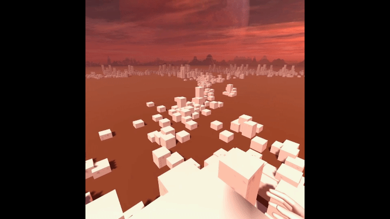
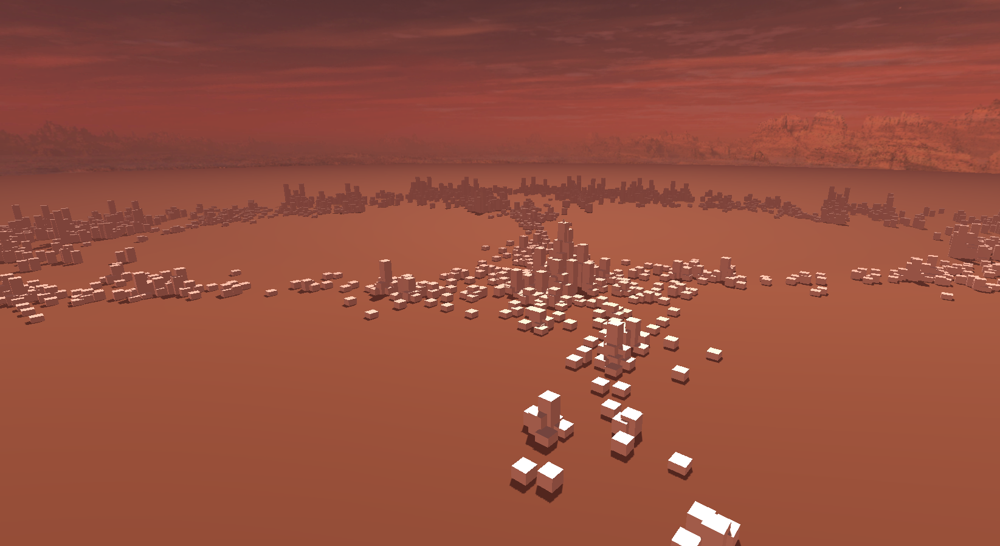
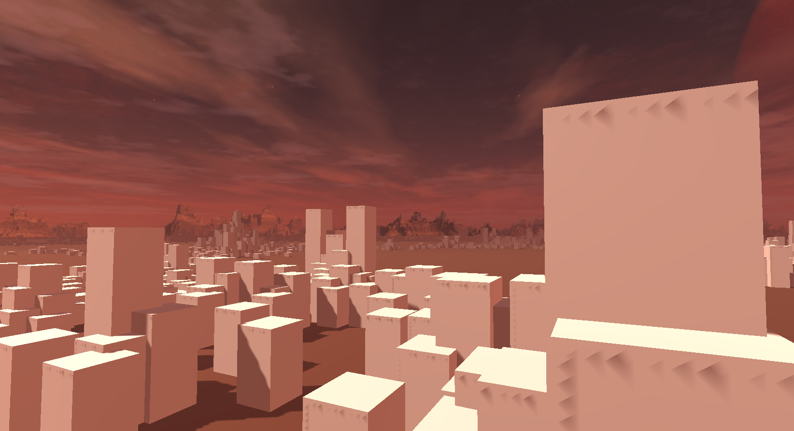
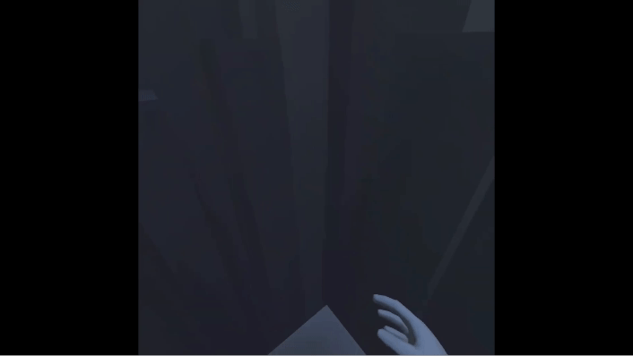
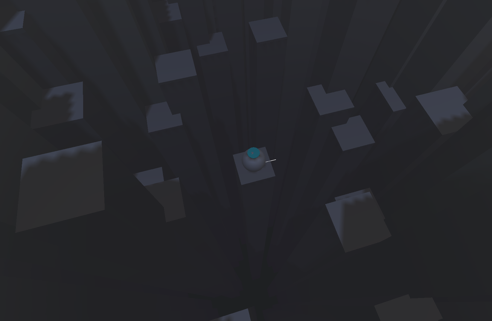

Concave Convexe
Design d’espace
virtuel en VR
Dans le cadre d’un cours d’étude du numérique, nous avons étudié les enjeux de la VR. La demande à été de réaliser deux espaces, pouvant être visionnés dans des casques de réalité virtuelle.
Les notions de concave et convexe, arrondis vers l’intérieur ou vers l’extérieur sont des notions subtiles qui poussent analyser le ressenti des utilisateurs face à un environnement composé.








Design d'espace et vr
Ce projet fut surtout une manière de découvrir et d’explorer différentes notions de design d’espace tout en se familiarisant avec unity et particulièrement la VR.
Année • 2022
Durée • 1 semaine
Contexte • scolaire
Groupe • solo
Outils • Unity, Oculus Quest 2, Photoshop